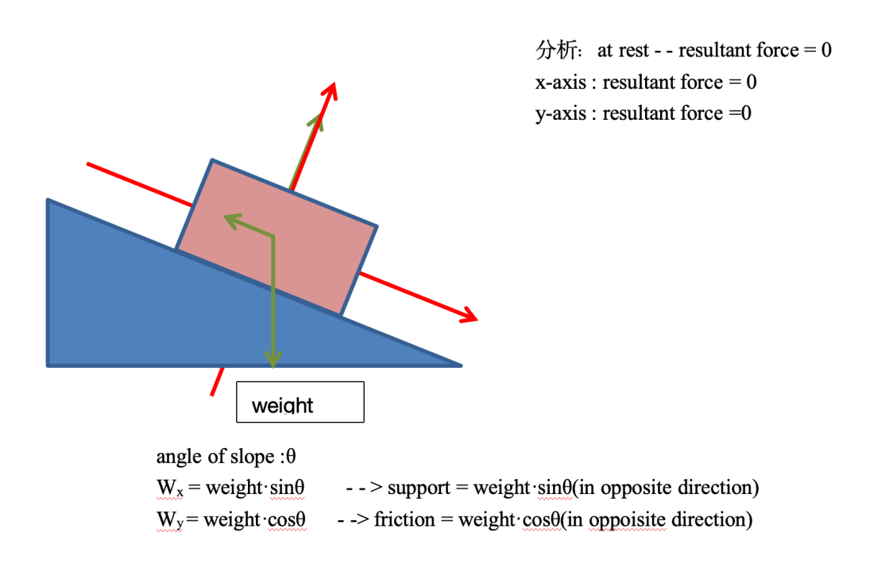

Skills in the study of physics
测量 · 基本单位 · 误差与不确定度 · 图像处理 · 标量与矢量
Syllabus focus：能正确使用 SI 单位与量纲检验；区分系统/随机误差与准确度/精确度；合成不确定度；从图像读取梯度、截距与不确定度；正确处理矢量。
1基本单位与量纲齐次性
若方程左右两边的基本单位相同，则该方程是量纲齐次（homogeneous）的。量纲齐次是公式正确的必要条件（但不充分）。
| 物理量 | 导出单位 | 基本单位 | 来源 |
|---|---|---|---|
| 力 Force | N | $1\ \text{kg}\,\text{m}\,\text{s}^{-2}$ | $F=ma$ |
| 能量 Energy | J | $1\ \text{kg}\,\text{m}^{2}\,\text{s}^{-2}$ | $E=\tfrac12 mv^2$ |
| 压强 Pressure | Pa | $1\ \text{kg}\,\text{m}^{-1}\,\text{s}^{-2}$ | $p=F/A$ |
| 功率 Power | W | $1\ \text{kg}\,\text{m}^{2}\,\text{s}^{-3}$ | $P=E/t$ |
Exam tip：用基本单位检验选项时，先把所有导出单位拆成 kg、m、s、A、K、mol、cd。
2误差：系统误差与随机误差
系统误差 Systematic
每次重复都相同方向、相同量地偏移真值（含零点误差）。
- 来自仪器或实验设置
- 影响准确度 accuracy
- 不能靠重复/平均消除
随机误差 Random
重复实验时结果在真值附近随机波动。
- 影响精确度 precision
- 表现为数据离散
- 可通过重复并取平均减小
3准确度与精确度

记忆：系统误差 → 准确度；随机误差 → 精确度。
4不确定度 Uncertainty
单次读数不确定度通常取仪器最小分度的一半（$\pm\tfrac12$ division）。
合成规则
| 运算 | 规则 |
|---|---|
| 加减（同单位） | 绝对不确定度相加 |
| 乘除 / 乘方 | 百分比不确定度相加；乘方再乘指数 |
$$\text{percentage uncertainty}=\frac{\Delta x}{x}\times 100\%$$
5图像处理

- 误差棒长度 ÷ 2 → 该点绝对不确定度
- 最佳拟合线须穿过（或合理穿过）误差棒
- 梯度：取线上相距较远两点
$$\text{gradient}=\frac{\Delta y}{\Delta x}=\frac{y_2-y_1}{x_2-x_1}$$
6标量与矢量
标量 Scalar
只有大小（magnitude）。例：质量、时间、能量、速率。
矢量 Vector
大小 + 方向。例：位移、速度、加速度、力、动量。
加法 / 减法


$$\vec{F_2}-\vec{F_1}=\vec{F_2}+(-\vec{F_1})$$

正交分解

$$F_x=F\cos\theta\qquad F_y=F\sin\theta$$